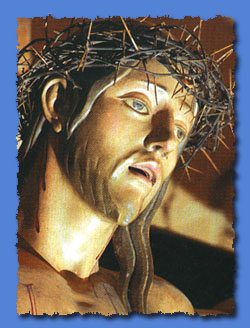
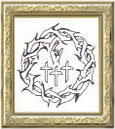
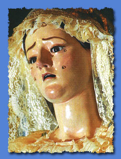
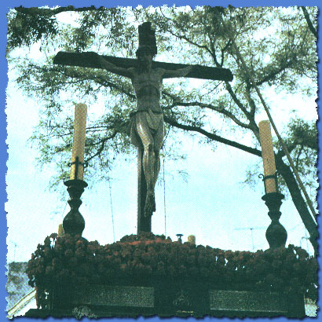
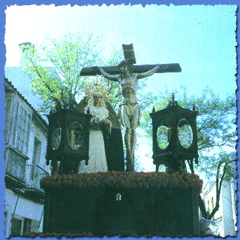
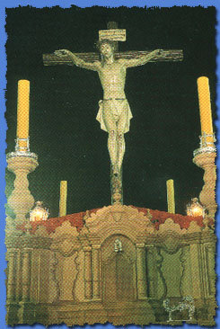
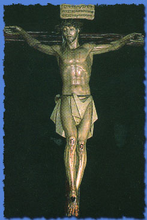
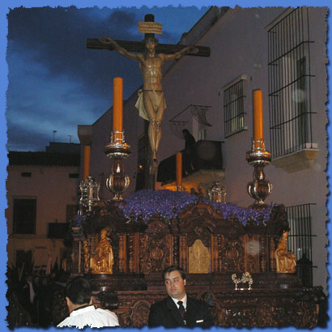
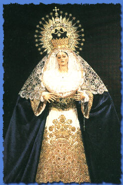
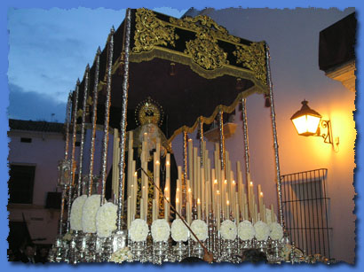

|
 |
 |
 |
| Hermandad y Cofradía de Nazarenos del Santísimo Cristo del Perdón, María Santísima del Perpetuo Socorro y San José Obrero | ||
| Pasos | Templo | Barrio |
| Dos | Ermita de Guía | La Alcubilla |
| Historia | |
|
La Hermandad del Perdón cuenta con una joven pero muy bella historia a
sus espaldas. La idea de su fundación surge el 1 de Mayo de 1963, Fiesta
del Trabajo que desde 1955 había sido reconocida cristianamente por el
Papa Pío XII. Esto motiva a un grupo de trabajadores de Jerez a querer
formar un grupo apostólico que evangelice día a día a sus compañeros de
trabajo. El primer paso a dar fue buscar a un sacerdote que les ayudase
a introducirse en la Iglesia y lo encontraron en la figura del Padre D.
José Luís Repetto Bettes, actual Deán de la Catedral que por aquel
entonces era el párroco de la Iglesia de Santa Ana. La idea propuesta
por este grupo de fieles entusiasmó rápidamente al párroco que les dio
cobijo en los salones de la parroquia para que pudiesen llevar a cabo
sus reuniones y actividades. El siguiente paso era conseguir la aprobación del obispado. El Padre Repetto se dirigió a Monseñor Cirarda, Obispo Vicario de Jerez (por aquellos años, Jerez pertenecía a la Archidiócesis de Sevilla por lo que contaba con un Obispo Vicario que auxiliaba al Arzobispo en toda la zona perteneciente a la Provincia de Cádiz) y le solicitó la erección canónica como Hermandad al grupo de fieles. La respuesta de Monseñor Cirarda fue tajantemente negativa, alegando que en Jerez existían demasiadas cofradías, 29 por aquel entonces, por lo que los fieles tuvieron que conformarse con constituirse en Asociación Piadosa. Tras la constitución como Asociación Piadosa, se aprobaron sus primeros estatutos y adquirieron, en 1966, la imagen del Santísimo Cristo del Perdón, la cual sería objeto de un Vía Crucis todos los Viernes de Dolores de cada año, siendo este el acto central de la Asociación. |
|
| A principios
de los 70, Monseñor Cirarda se trasladó a Santander, ocupando su puesto
Monseñor del Val y surgiendo así una nueva posibilidad para ser
Hermandad de Penitencia. El Padre Repetto en esta ocasión sugirió a los
hermanos de la Asociación llevar a cabo una conducta súmamente humilde y
ejemplar para lograr la aprobación del nuevo Obispo Vicario. Un Lunes Santo de principios de los 70, el Padre Repetto propuso a los hermanos de la Asociación, formar parte del cortejo de la Hermandad de la Candelaria, que también tenía su sede en Santa Ana, haciendo la estación en absoluto silencio y rigurosa penitencia, para agradar así a Monseñor del Val y lograr la concesión para ser Hermandad. Así se hizo y cuando el cortejo pasó por delante del Obispo Vicario, el Padre Repetto le indicó la procedencia de esos hermanos y su intención de fundar una nueva Hermandad. Monseñor del Val dió su beneplácito inmediatamente por lo que, tras una audiencia con el Cardenal Bueno Monreal en 1972, la cofradía quedó constituida, siendo ésta la más joven de Jerez hasta 1998. |
 Esta imagen corresponde a la primera Estación de Penitencia realizada por la Hermandad el Sábado Santo de 1973. El paso sobre el que procesiona el Cristo del Perdón es el primitivo paso de misterio de la Hermandad de la Candelaria.
|
| El Sábado
Santo de 1973, la recién creada Hermandad del Perdón realiza su primera
Estación de Penitencia. Curiosamente, ese mismo Sábado Santo, la
Hermandad de la Candelaria, que residía en el mismo templo, realiza la
Estación de Penitencia que la lluvia les impidió realizar el Lunes
Santo, su día de salida. Esta estación la realizaron únicamente con el
paso de palio y es que el paso de misterio estaba siendo utilizado por
la Hermandad del Perdón, que lo había recibido prestado. Tras esta primera Estación, la Hermandad se ubica en la tarde del Viernes Santo. Tras una segunda Estación usando el paso del Cristo de la Viga, los Hermanos logran hacerse con un austero paso realizado en unos Talleres de F.P. del Puerto de Santa María. En 1975, tras un curioso hallazgo, la Hermandad recibe de manos del Padre Repetto, que pocos meses después de la primera Estación fue nombrado Deán de la Catedral, la imagen de María Santísima del Perpetuo Socorro que pasa a procesionar en el paso de misterio a los pies de su Hijo. Durante estos años, la procesión de la Hermandad tiene un gran esplendor, siendo el momento más bello la visita al cercano Sanatorio de Santa Rosalía (hoy Hospital de San Juan Grande). En 1992 la Hermandad realiza profundos cambios en su Estación de Penitencia. Cambia de día de salida y pasa a engrosar la nómina de la Madrugada del Viernes Santo, la imagen de María Santísima del Perpetuo Socorro deja de procesionar, a la espera de volver a hacerlo en un paso de palio y el Santísimo Cristo del Perdón cambia de Paso, de Cruz y vuelve a procesionar en solitario. En 1998, la Hermandad adquiere la Ermita de Guía, un templo con muchísima historia situado en el Barrio de la Alcubilla y que se encontraba en un estado de total abandono y ruinoso. La Hermandad inicia un intenso proceso de restauración tras el cual, la Ermita se convierte en la nueva sede canónica de la misma. Durante la cuaresma de 1998, y aprovechando el Vía Crucis de la Unión de Hermandades, del que el Cristo del Perdón era el titular ese año (y por primera y única vez, una imagen mariana, la de la Virgen del Perpetuo Socorro), se realiza el traslado a la nueva sede canónica. En 1999 la Hermandad sufre uno de sus episodios más dolorosos cuando durante el besapiés del Cristo, un cirio prende los ropajes de la Virgen del Perpetuo Socorro incendiando la imagen y provocándoles serios daños que fueron restaurados por Mari Paz Barbero. En 2002, y tras dos años de gran trabajo para recaudar fondos, se consigue adquirir un paso de palio para la Virgen del Perpetuo Socorro, que pasa a procesionar en la Madrugada de ese mismo año, aunque el estreno se vio chafado por la lluvia. Durante los últimos años, la Estación de Penitencia de esta Hermandad había venido sufriendo un drástico descenso de público, provocando que la Hermandad se viese prácticamente sola en las últimos tramos de su recorrido, por lo que en 2006 solicitan un cambio de día a la Unión de Hermandades, pidiendo ser reubicada el Domingo de Ramos o Jueves Santo, días donde la afluencia de público será mayor. Finalmente la Unión de Hermandades concede el cambio para el Domingo de Ramos, por lo que desde el año 2007 en adelante, esta Hermandad pasará a procesionar este día. |
|
 Durante muchos años, la Virgen del Perpetuo Socorro procesionó a los pies de su hijo durante la tarde del Viernes Santo en un sencillo paso de misterio realizado por unos alumnos de F.P. del Puerto de Santa María. Esta bella estampa dejó de verse a partir del año 1992. |
 Esta instantánea pertenece al año 1992, cuando la Hermandad realizó su primera Estación de Penitencia en la Madrugada del Viernes Santo y María del Perpetuo Socorro inició su larga espera de 10 años para volver a salir a la calle bajo un palio. |
| Paso de Misterio e Imagen del Señor | |
| Cuando en
1966 se aprobó la creación de la Asociación Piadosa del Cristo del
Perdón, se buscó una imagen para representar a esta advocación. El
imaginero elegido fue el jerezano Francisco Pinto Berraquero y se le
dieron unas sencillas instrucciones: Querían una imagen del salvador,
crucificado, vivo, con los ojos abiertos y que mirase al frente
perdonando al penitente que le suplica a sus pies que escuche y perdone
sus pecados. El escultor puso el resto y el resultado fue una imagen que
impactó profundamente a la opinión pública, ya que se trata de un Cristo
totalmente alejado de los cánones barrocos que tanto inundan las
procesiones de Semana Santa. Fue bendecido el 12 de Febrero de 1967 y en
1992 fueron cambiados el INRI y la cruz recta por una de tipo arbóreo. No suele quedar muy claro si la imagen representa el momento del perdón al buen ladrón (la imagen procesiona totalmente sola) o el momento en que Jesús pronuncia la famosa frase "Padre, perdónalos porque no saben lo que hacen". Se han oído algunos rumores de una posible incorporación de imágenes secundarias que podrían llevar a pensar que la alternativa correcta es la primera. |
 |
|
 |
El actual paso de misterio se estrenó en carpintería en la Semana Santa de 1992, coincidiendo con la primera Estación realizada en la Madrugada del Viernes Santo. Antonio Martín fue el autor de este paso neobarroco lleno de una gran cantidad de piezas de orfebrería ejecutadas por Manuel de los Ríos. El paso cuenta con una gran cantidad de capillas donde se contemplan diversas imágenes talladas. Aún no se han terminado de tallar todas las capillas. |
| Paso de Palio e Imagen de la Virgen | |
| La imagen de
María Santísima del Perpetuo Socorro es una talla de terracota, de
tamaño académico datada a principios del s. XVIII y obra de Jácome
Báccaro, teniendo entre sus enseres un juego de corona y puñal de plata
sobredorada realizado en el taller de orfebrería.
Procesionó desde su llegada a la Hermandad a los pies de su hijo en el mismo paso. En 1992, se decide que el Cristo procesiones solo mientras que la Virgen esperaría en el templo hasta lograr procesionar en un paso de palio, hecho que consigue en 2002. Sufrió un incendio en 1999 que le provocaron graves desperfectos que fueron arreglados tras una restauración efectuada por Mari Paz Barbero. Como dato curioso cabe destacar que esta imagen procesionó vestida de hebrea durante los últimos años que salió en el paso de misterio. |
 |
| La forma en que esta talla llegó a la Hermandad fue muy curiosa: Esta imagen fue la primitiva dolorosa de la actual Hermandad de la Amargura. A finales de los años 30, los Hermanos de la Amargura descubrieron a su actual dolorosa en San Juan de los Caballeros, a donde había ido a parar tras la cesión de la Iglesia de la Santísima Trinidad a Las Esclavas de María Medianera. Se descubrió que esa dolorosa, había sido anteriormente llamada con la advocación de la Amargura como titular de la extinta Hermandad de San Antón, por lo que decidieron recuperarla como titular de la nueva Hermandad de la Amargura, pero antes, debían deshacerse de la que tenían, por lo que decidieron esconder el rostro de su dolorosa tras un pesado armario de su sede canónica, la por entonces Colegial de San Salvador (actual Catedral) y fingir que habían perdido la dolorosa en un incendio, logrando así convencer al capellán de San Juan de los Caballeros de la cesión de la que a día de hoy es la actual Virgen de la Amargura. La anterior imagen permaneció escondida varios años hasta que en 1975, el Padre Repetto encuentra la dolorosa en el mismo armario donde fue escondida años atrás y se la cede en depósito a la por entonces joven Hermandad del Perdón bajo la advocación de María Santísima del Perpetuo Socorro. | |
|
 |
Tras 10 años de no procesionar, en la Madrugada de 2002 la imagen de María del Perpétuo Socorro volvió a salir a la calle en un paso de Palio. Se trata de un paso compuesto por orfebrería en alpaca, diseñado por Manuel de Los Ríos Navarro y terciopelo burdeos bordado en oro por Fernando Calderón. Dada su reciente creación, el paso está incompleto aún, faltándole elementos como la imagen venera, que será la de San José Obrero con el Niño Jesús y los bordados de las caídas laterales, así como el bordado de los faldones y el interior del palio. |